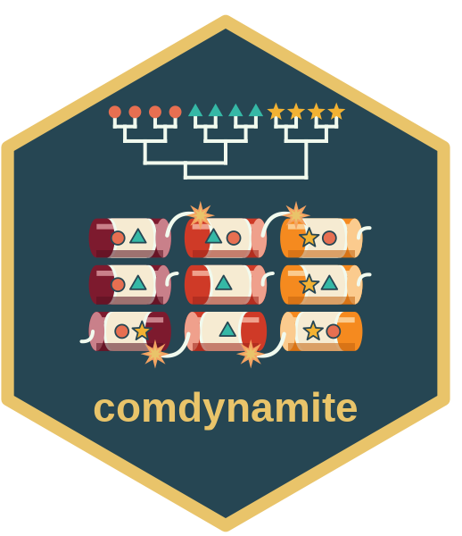
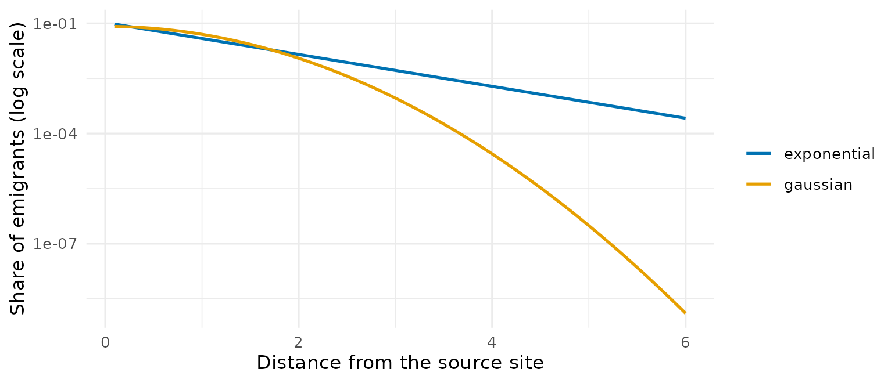
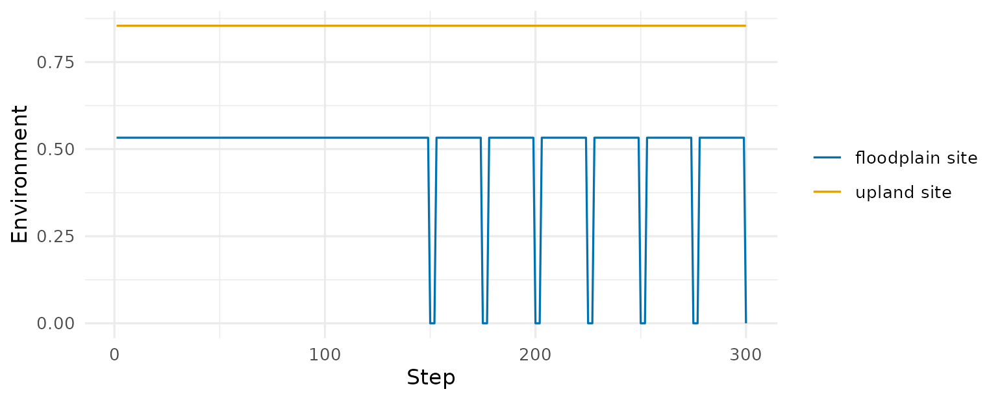
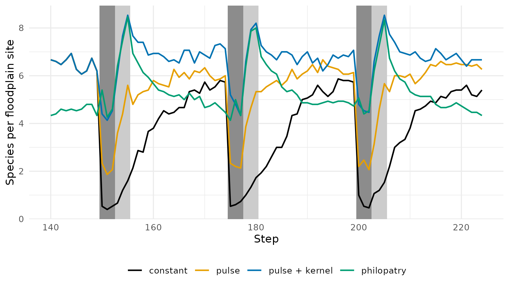

Dispersal and disturbance through time
Source:vignettes/articles/dispersal-disturbance.Rmd
dispersal-disturbance.RmdMany metacommunities are not connected in the same way all year
round. Floods join ponds and lakes that are isolated in the dry season,
animals disperse in a breeding season and stay home for the rest of the
year, and disturbances come back at a regular interval instead of once.
This article shows the three tools of comdynamite for these
cases: the shape of the dispersal kernel, recurrent pulses of
disturbance with env_pulse(), and dispersal that changes
through time with the arguments dispersal_time,
kernels and kernel_step of
simulate_metacommunity(). It ends with a flood-pulse
example in which the three are combined.
Shape of the dispersal kernel
In a spatially explicit landscape, an emigrant from site s reaches site t with a probability proportional to \exp(-d/\text{scale}) for the exponential
kernel (the default) or \exp(-d^2/(2\,\text{scale}^2)) for the
Gaussian one, where d is the distance
between the sites. The scale is the mean dispersal distance
of the exponential kernel and the standard deviation of the Gaussian
one. For the same scale, the Gaussian kernel sends more emigrants to
near sites and far fewer to distant sites, that is, it has a thin tail,
whereas the exponential kernel keeps some long-distance dispersal.
dispersal_kernel() builds the matrix from distances, and
landscape_grid() and landscape_points() take
the shape through disp_shape.
d <- as.matrix(dist(cbind(seq(0, 6, by = 0.1), 0)))
shape <- rbind(
data.frame(distance = d[1, -1], shape = "exponential",
p = dispersal_kernel(d, scale = 1)[1, -1]),
data.frame(distance = d[1, -1], shape = "gaussian",
p = dispersal_kernel(d, scale = 1, shape = "gaussian")[1, -1]))
ggplot(shape, aes(distance, p, colour = shape)) +
geom_line(linewidth = 0.8) +
scale_y_log10() +
scale_colour_manual(values = c("#0072B2", "#E69F00")) +
labs(x = "Distance from the source site", y = "Share of emigrants (log scale)",
colour = NULL) +
theme_minimal(base_size = 11)
Notice that the two kernels send a similar share of emigrants to the nearest sites, but at a distance of 5 the Gaussian kernel sends several orders of magnitude fewer than the exponential one. In a landscape:
set.seed(1)
xy <- expand.grid(x = 1:6, y = 1:5)
ls_gauss <- landscape_points(xy, env = runif(30), disp_scale = 0.7, disp_shape = "gaussian")In both shapes the diagonal of the dispersal matrix is zero: the
kernel only says where emigrants go. How many individuals stay at home
is set by the emigration probability, dispersal. Any other
kernel can be passed as a matrix to landscape_matrix().
Recurrent pulses of disturbance
env_pulse() changes the environment of some sites for
some steps, so that disturbance acts on growth through the niches of
species, as in the replication of
Hajian-Forooshani & Chase (2026). With every, the
pulse comes back at a fixed period until the last step, and the
frequency of disturbance is 1 / every. Below, the sites of
a floodplain (the three western columns of a 6 × 5 grid) are flooded for
3 steps every 25 steps from step 150 on, and their environment falls to
0 during each flood. The other sites, in the uplands, are never
flooded.
set.seed(1)
plain <- xy$x <= 3
env <- runif(30, 0.4, 0.9)
n_steps <- 300
et <- env_pulse(env, n_steps, sites = plain, start = 150, duration = 3, value = 0,
every = 25)
two <- data.frame(step = rep(seq_len(n_steps), 2),
site = rep(c("floodplain site", "upland site"), each = n_steps),
env = c(et[which(plain)[1], ], et[which(!plain)[1], ]))
ggplot(two, aes(step, env, colour = site)) +
geom_line() +
scale_colour_manual(values = c("#0072B2", "#E69F00")) +
labs(x = "Step", y = "Environment", colour = NULL) +
theme_minimal(base_size = 11)
Dispersal that changes through time
Two arguments of simulate_metacommunity() (and of
mc_dynamics()) make dispersal change through time.
-
dispersal_timechanges how many individuals leave. As a vector, it gives one multiplier ofdispersalper step, soifelse(flooded, 5, 1)multiplies emigration by five in flooded steps (probabilities above 1 are set to 1). As a matrix, it gives the emigration probability of each step directly, in one column or one column per species. Low values in some steps express philopatry: most individuals stay at their natal site in those steps. -
kernelsandkernel_stepchange where emigrants go.kernelsis a list of dispersal matrices on the same sites, for instance thedispersalof landscapes with different scales or shapes, or matrices written by hand;kernel_stepgives, for each step, the index or the name of the matrix in use. Rows are rescaled to sum to 1 and the diagonal is ignored.
The two are independent and can be combined. The evolving engine
(evolution in simulate_metacommunity()) does
not support them yet.
A flood-pulse example
The example combines the three tools in a landscape loosely inspired by a seasonal floodplain such as the Pantanal. The floodplain sites are disturbed by the recurrent floods above. Each high-water season lasts 6 steps: the first 3 are the floods, and the last 3 are the receding water, when the plain is still connected but its environment has returned to normal. We compare four scenarios.
- constant: emigration of 0.02 per step and a short exponential kernel (scale 0.7) at every step.
- pulse: emigration multiplied by 5 during high water, with the same short kernel.
- pulse + kernel: as pulse, and during high water emigrants follow a long kernel (scale 3), as water connects distant sites.
- philopatry: as pulse + kernel, but outside high water emigration falls to a tenth.
dry <- landscape_points(xy, env = env, disp_scale = 0.7)
wet <- landscape_points(xy, env = env, disp_scale = 3)
k <- 10
traits <- data.frame(optimum = seq(0.4, 0.9, length.out = k), sigma = 0.1 * sqrt(2),
r_max = 5, row.names = paste0("sp", 1:k))
alpha <- competition_matrix(k, "random", inter_max = 0.5)
high <- seq_len(n_steps) >= 150 & (seq_len(n_steps) - 150) %% 25 < 6
regime <- ifelse(high, "wet", "dry")
run <- function(...) {
set.seed(2)
simulate_metacommunity(dry, traits, alpha, dispersal = 0.02, n_steps = n_steps,
env_time = et, record_steps = seq_len(n_steps),
immigration = "multinomial", ...)
}
sims <- list(
"constant" = run(),
"pulse" = run(dispersal_time = ifelse(high, 5, 1)),
"pulse + kernel" = run(dispersal_time = ifelse(high, 5, 1),
kernels = list(dry = dry, wet = wet), kernel_step = regime),
"philopatry" = run(dispersal_time = ifelse(high, 5, 0.1),
kernels = list(dry = dry, wet = wet), kernel_step = regime))The figure shows the mean number of species per floodplain site over three flood cycles. Floods are shaded in dark grey and the receding water in light grey.
richness <- do.call(rbind, lapply(names(sims), function(s) {
h <- sims[[s]]$history[plain, , ]
data.frame(scenario = s, step = seq_len(n_steps),
richness = colMeans(apply(h > 0, c(1, 3), sum)))
}))
richness$scenario <- factor(richness$scenario, names(sims))
cycles <- data.frame(start = seq(150, n_steps, by = 25))
ggplot(subset(richness, step >= 140 & step < 225), aes(step, richness, colour = scenario)) +
geom_rect(data = subset(cycles, start < 225), inherit.aes = FALSE, fill = "grey80",
aes(xmin = start - 0.5, xmax = start + 5.5, ymin = -Inf, ymax = Inf)) +
geom_rect(data = subset(cycles, start < 225), inherit.aes = FALSE, fill = "grey55",
aes(xmin = start - 0.5, xmax = start + 2.5, ymin = -Inf, ymax = Inf)) +
geom_line(linewidth = 0.7) +
scale_colour_manual(values = c("#000000", "#E69F00", "#0072B2", "#009E73")) +
labs(x = "Step", y = "Species per floodplain site", colour = NULL) +
theme_minimal(base_size = 11) + theme(legend.position = "bottom")
With constant dispersal, each flood empties the floodplain, which is then recolonised slowly from the uplands through the short kernel and has not fully recovered when the next flood arrives. A dispersal pulse during high water speeds up recolonisation, because the receding water brings five times more emigrants from the uplands. When high water also connects distant sites, the floodplain keeps some species even during floods, as upland emigrants keep arriving, and richness overshoots right after the flood, a mass effect that fades in the dry season. Philopatry in the dry season leaves the response to floods almost unchanged but lowers richness between floods, since without dispersal each site keeps only the species that do best in its environment. These results come from a single run of an illustrative parameterisation; they show what the arguments do, not how a real floodplain behaves.
The same tools describe other temporal structures. A breeding
migration is a dispersal_time that is high in breeding
steps only; seasonal philopatry with dispersal of juveniles is a matrix
dispersal_time with one column per species when species
breed at different times; and corridors that open and close are matrices
in kernels with some routes set to zero.